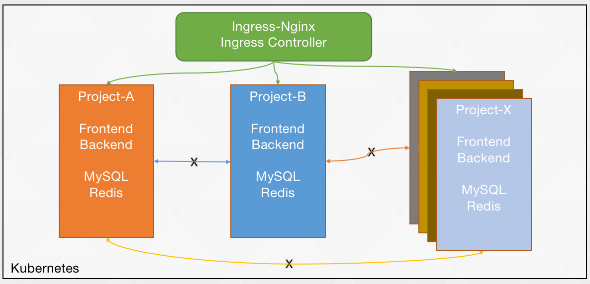

07-k8s-拓展-网络策略
- TAGS: Kubernetes
k8s-拓展-网络策略Network Policy
什么是NetworkPolicy？
K8s命名空间隔离性

不同名称空间下的资源类型名称是可以相同的。只要在资源名称后面加上 namesapce 名称就可以跨名称空间访问，所以这是一种软隔离。
K8s Pod之间无隔离性

如果知道 pod 的 ip 地址，不同名称空间下的任一 pod 都能访问。
K8s 网络策略

可以对名称空间做隔离、服务限制访问
NetworkPolicy配置详解
参考：https://kubernetes.io/docs/concepts/services-networking/network-policies/
apiVersion: networking.k8s.io/v1
kind: NetworkPolicy
metadata:
name: test-network-policy
namespace: default
spec:
podSelector: # 对哪些 pod 生效
matchLabels:
role: db
policyTypes: # 限制入口还是出口，Ingress 入口，Egress 出口。未指定 policyTypes 则默认情况下始终设置 Ingress； 如果 NetworkPolicy 有任何出口规则的话则设置 Egress
- Ingress
- Egress
ingress:
- from: # 限制容器或者 ip 地址访问。ipBlock、namespaceSelector、podSelector 各自有一个横杠表示或者的关系，包含在一个横杠中表示且的关系
- ipBlock: # ip 限制。是网段内的 pod 可以访问。 是 172.17.0.0/16 网，但排除 172.17.1.0/24 网段。
cidr: 172.17.0.0/16
except:
- 172.17.1.0/24
- namespaceSelector: # namespace 限制。
matchLabels:
project: myproject
- podSelector: # pod 限制。
matchLabels:
role: frontend
ports:
- protocol: TCP
port: 6379
egress:
- to:
- ipBlock:
cidr: 10.0.0.0/24
ports:
- protocol: TCP
port: 5978
说明：
- 必需字段：与所有其他的 Kubernetes 配置一样，NetworkPolicy 需要 apiVersion、 kind 和 metadata 字段。
- spec：NetworkPolicy 规约 中包含了在一个名字空间中定义特定网络策略所需的所有信息。
- podSelector：每个 NetworkPolicy 都包括一个 podSelector， 它对该策略所适用的一组 Pod 进行选择。示例中的策略选择带有 "role=db" 标签的 Pod。 空的 podSelector 选择名字空间下的所有 Pod。
- policyTypes：每个 NetworkPolicy 都包含一个 policyTypes 列表，其中包含 Ingress 或 Egress 或两者兼具。policyTypes 字段表示给定的策略是应用于进入所选 Pod 的入站流量还是来自所选 Pod 的出站流量，或两者兼有。 如果 NetworkPolicy 未指定 policyTypes 则默认情况下始终设置 Ingress； 如果 NetworkPolicy 有任何出口规则的话则设置 Egress。
- ingress：每个 NetworkPolicy 可包含一个 ingress 规则的白名单列表。 每个规则都允许同时匹配 from 和 ports 部分的流量。示例策略中包含一条简单的规则： 它匹配某个特定端口，来自三个来源中的一个，第一个通过 ipBlock 指定，第二个通过 namespaceSelector 指定，第三个通过 podSelector 指定。
- egress：每个 NetworkPolicy 可包含一个 egress 规则的白名单列表。 每个规则都允许匹配 to 和 port 部分的流量。该示例策略包含一条规则， 该规则将指定端口上的流量匹配到 10.0.0.0/24 中的任何目的地。
所以，该网络策略示例:
- 隔离 default 名字空间下 role=db 的 Pod （如果它们不是已经被隔离的话）。
- （Ingress 规则）允许以下 Pod 连接到 default 名字空间下的带有 role=db 标签的所有 Pod 的 6379 TCP 端口：
- default 名字空间下带有 role=frontend 标签的所有 Pod
- 带有 project=myproject 标签的所有名字空间中的 Pod
- IP 地址范围为 172.17.0.0–172.17.0.255 和 172.17.2.0–172.17.255.255 （即，除了 172.17.1.0/24 之外的所有 172.17.0.0/16）
- default 名字空间下带有 role=frontend 标签的所有 Pod
- （Egress 规则）允许 default 名字空间中任何带有标签 role=db 的 Pod 到 CIDR 10.0.0.0/24 下 5978 TCP 端口的连接。
参阅声明网络策略演练了解更多示例。
NetworkPolicy注意事项
ipBlock、namespaceSelector、podSelector 各自有一个横杠表示或者的关系，包含在一个横杠中表示且的关系
# 同级别或者的关系 - from: - ipBlock: cidr: 172.17.0.0/16 except: - 172.17.1.0/24 - namespaceSelector: matchLabels: project: myproject - podSelector: matchLabels: role: frontend # namespaceSelector 和 podSelector 是且的关系，整体与 ipBlock 是或者的关系 # 允许 `project=myproject` 标签的名称空间下 `role=frontend` 的pod 访问，或者 ip 除了 172.17.1.0/24 之外的所有 172.17.0.0/16 的 pod 访问。 - from: - ipBlock: cidr: 172.17.0.0/16 except: - 172.17.1.0/24 - namespaceSelector: matchLabels: project: myproject podSelector: matchLabels: role: frontend
ip 不建议使用，因为 pod ip 会改变。另外有目标地址转换的也不建议使用。